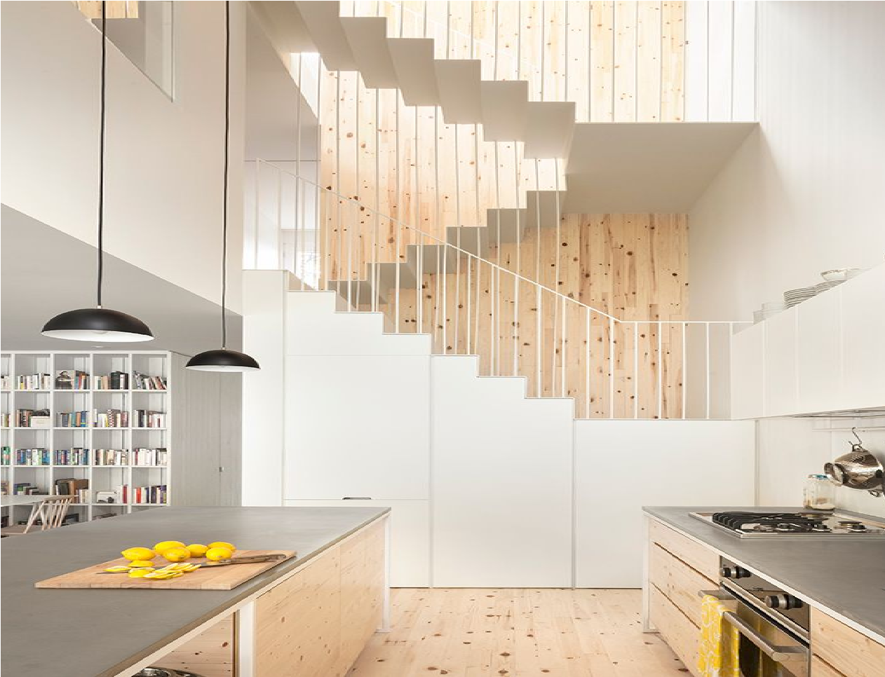
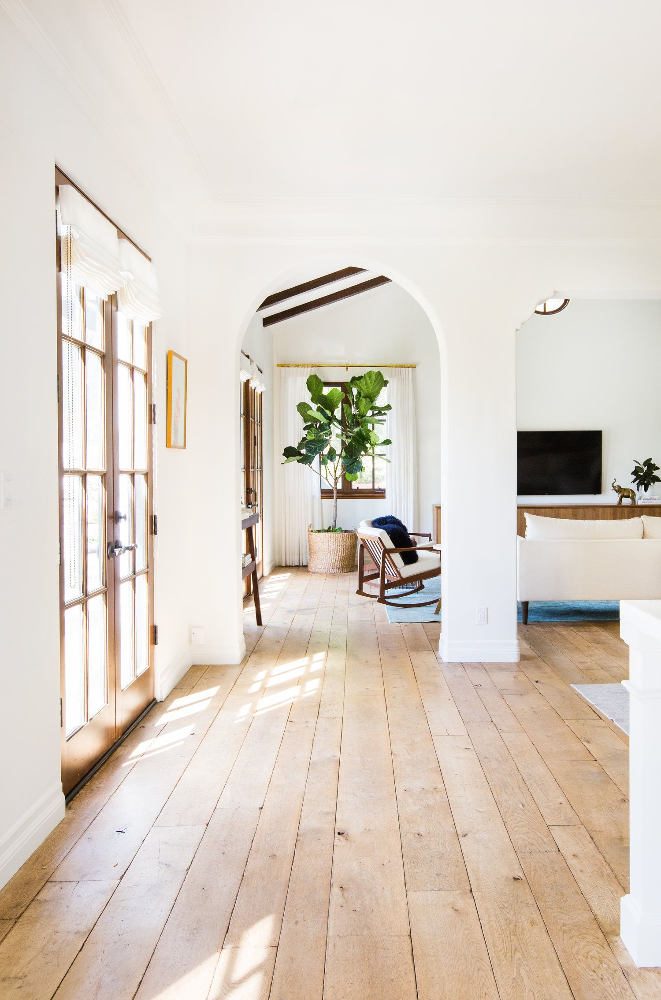
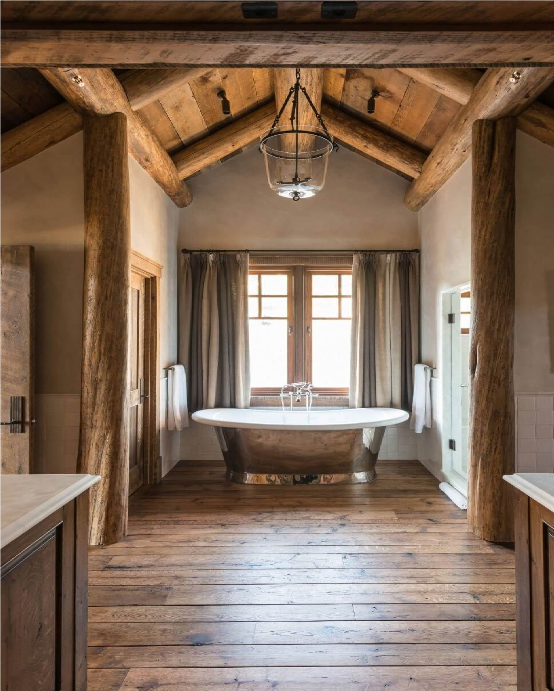
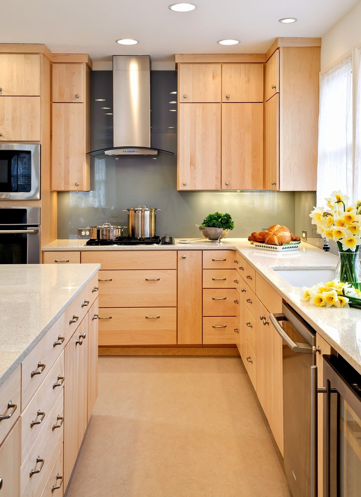
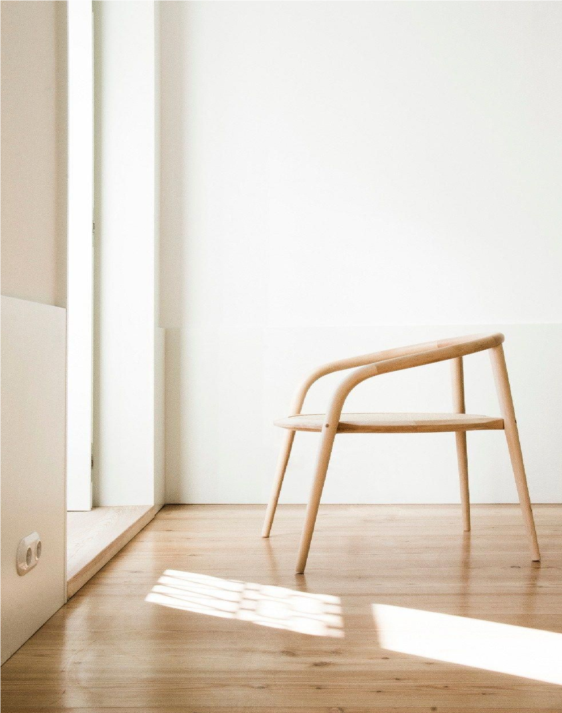
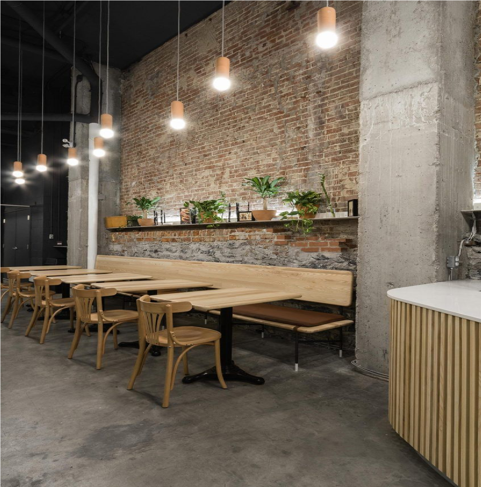
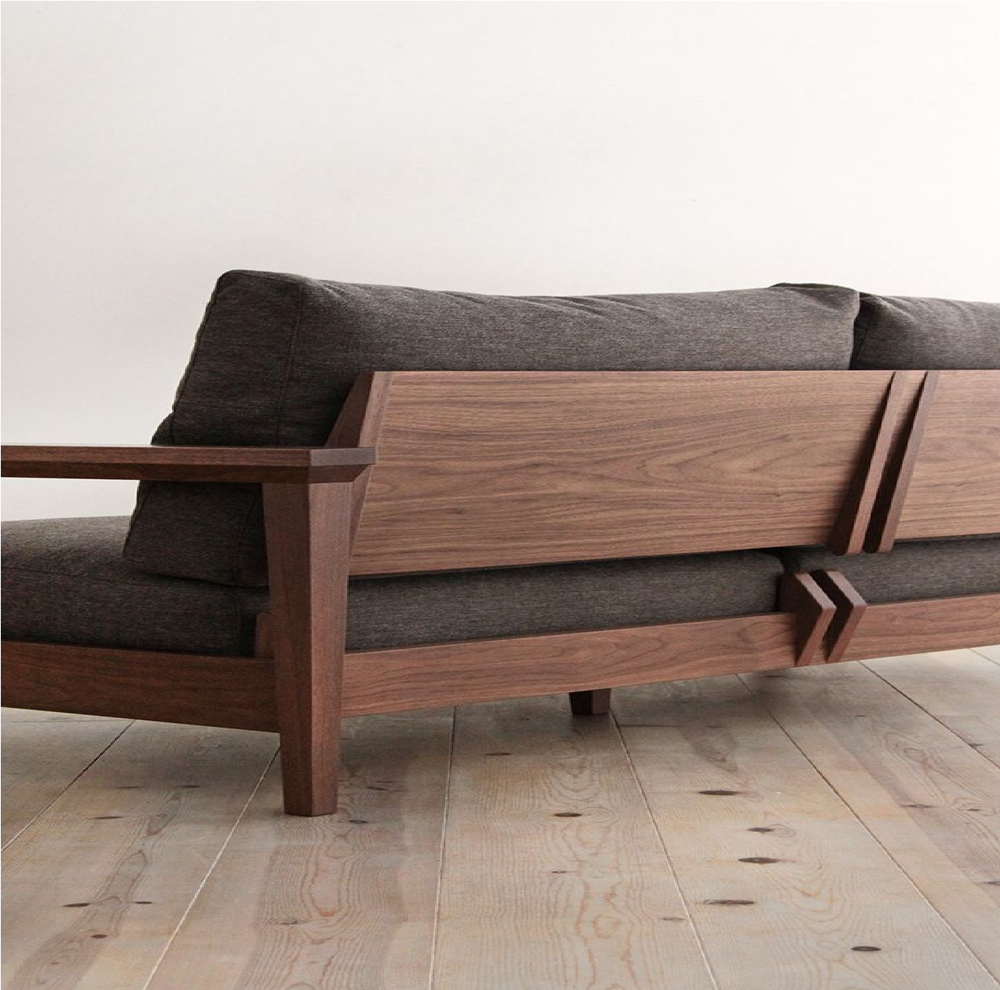
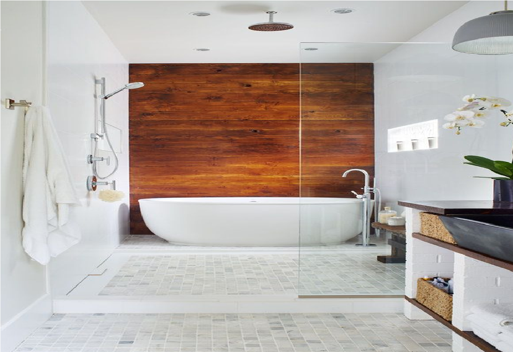
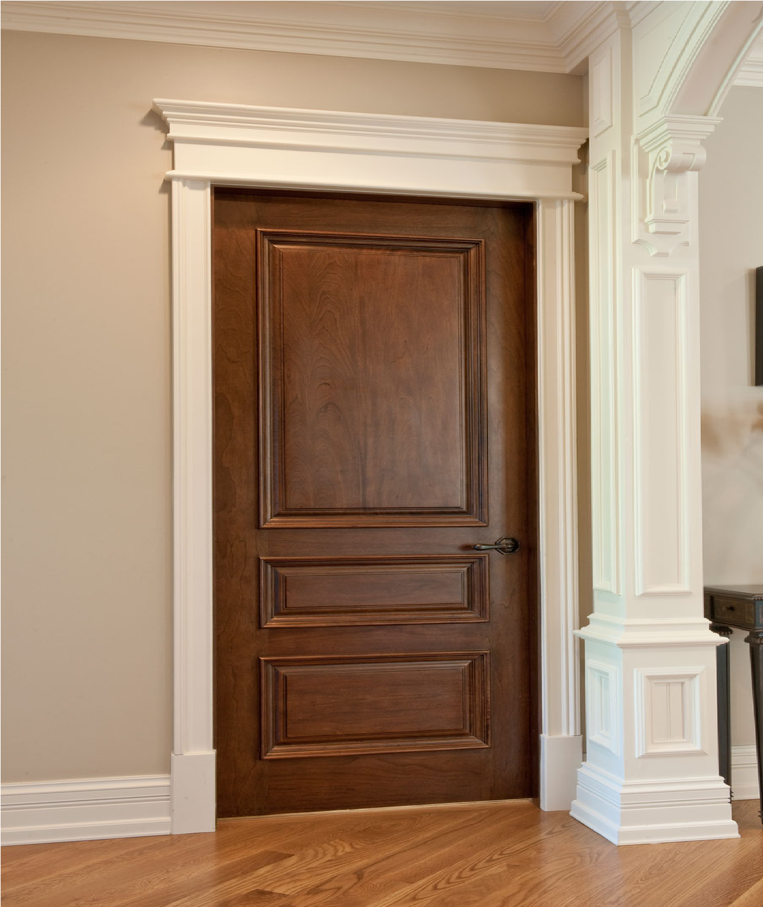

Servicios
Contamos con una amplia variedad de servicios a precios accesibles, cómodos y duraderos. Contamos con hechuras de:
• Muebles, escritorios, cuadros, marcos de fotos o espejos, bancas, puertas, mesas, alacenas, cercas, celosillas, etc.
• Pérgolas, muebles, juegos infantiles, piso, accesorios, bancas, mesas, basureros, etc.
• Casas de jardín, casas de perros, casas estilos canadienses, casas con cedro, etc.
• Tarimas, camastrones, sillones extensibles, madera para leña u otras cosas, closets, y muchas más cosas.
Contamos con servicio a domicilio confiable, rápido y seguro. Así como nuestras sucursales o nuestra sede central, contamos con personal altamente calificado para hacer de sus deseos realidad, a la medida que desea y del estilo que lo desee. También con servicio de restauración de todo tipo de muebles.
Clases de Madera
Ofrecemos múltiples opciones de clases de madera para que pueda ajustarse a su comodidad, gusto y economía:

• Abeto: Es una madera clara, blanca-amarillenta y fácil de trabajar. Se utiliza para fabricar muebles, instrumentos musicales, puertas y ventanas, y es muy común en el sector de la construcción, también porque tiene una gran resistencia a la humedad.

• Pino: Es uno de los tipos de madera más baratas y usadas en la construcción. Tiene una textura uniforme y es fácil de trabajar, lo que lo convierte en uno de los tipos de maderas más utilizado por los profesionales de la carpintería, paneles, muebles y molduras.

• Cedro: El tipo más común de cedro es la variedad roja occidental. El cedro tiene un color rojizo , este tipo de madera es relativamente suave, tiene un grano recto y un olor ligeramente aromático. El cedro rojo occidental se usa principalmente para hacer muebles de exterior, ya que puede utilizarse en ambientes húmedos sin descomponerse. Además, tiene un precio moderado y es bastante robusto, por lo que es excelente para muebles de jardín.

• Arce: Este tipo de madera tiene una dureza media y, ciertamente, no tiene una duración muy larga, pero se usa tanto en la construcción como en la fabricación de instrumentos musicales y muebles. Sin embargo, no se encuentra entre los tipos de madera más valiosos del mercado. Una madera muy extendida en todo el mundo, con un color muy claro, que puede ir desde el blanco hasta el amarillento y el rosado.

• Haya: Tiene un color rojizo, y cuanto más viejo es, más oscuro se vuelve. Esta madera es bastante dura y fácil de trabajar y se usa para hacer instrumentos musicales, pero también para muebles de todo tipo. Su resistencia es bastante buena.

• Fresno: De color marrón claro, el fresno es muy resistente a los golpes y a la flexión. Por este motivo, es adecuado para realizar estructuras de soporte. Caracterizado por sus fibras rectas y nudos de ojo de perdiz, este tipo de madera se usa a menudo para puertas interiores.

• Nogal: Es uno de los tipos de madera más hermosos para los amantes de sus características venas. Su color es más bien oscuro y tiende a ser morado y se usa para hacer muebles, pero también para suelos y paredes. El nogal es bastante caro pero tiene algunas características muy interesantes: es duro y muy resistente, resiste el agrietamiento y los golpes y es muy compacto por lo que es adecuada para cualquier uso. Hoy en día se utiliza mucho para revestimientos de lujo: muebles, armarios, puertas, adornos y elementos torneados.

• Cerezo: Entre los diversos tipos de madera, el cerezo es uno de los más preciados y debemos reconocer que es realmente hermoso. Su color es rojo brillante y no por casualidad, se utiliza para la fabricación de muebles de lujo o trabajos de alta calidad. El cerezo es un tipo de madera bastante cara y de duración media, pero ciertamente no puede pasar desapercibida. Actualmente es ampliamente utilizada en la producción de muebles, sillas y revestimientos.

• Roble: Disponible en dos variedades: rojo y blanco. El roble es un tipo de madera muy común también en España y es particularmente querido porque es uno de las maderas más resistentes que se pueden encontrar. Difícil de trabajar debido a su dureza, el roble es bastante caro pero muy bonito y con un gran impacto estético. Se utiliza para la fabricación de suelos y revestimiento de paredes, pero también en muebles de lujo.

• Caoba: Una de las grandes maderas de muebles es la caoba, tiene un tono que varía de marrón rojizo a rojo oscuro. La caoba es una madera tropical, oscura, intensa, de color rojizo, grano fino y tiene una resistencia natural a los gusanos de la madera. Es una madera resistente con la que es fácil trabajar y es una de las favoritas de los ebanistas. Actualmente, se utiliza para suelos, usos decorativos, muebles y elementos interiores como puertas.